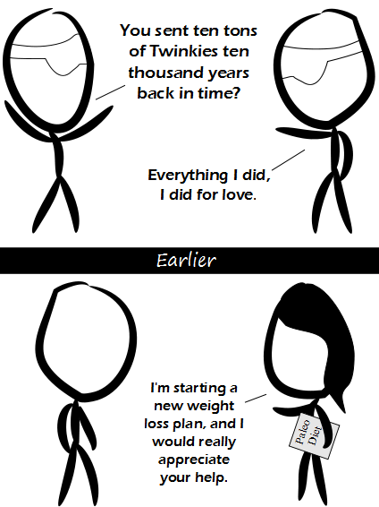

Comic JK 900
When I Feel Like It
⇤
<
?
>
⇥

⇤
<
?
>
⇥
Forum
.
RSS
.
Digg
.
Facebook
.
Reddit
.
Twitter
.
Stumbleupon
So THAT'S why they've gone bankrupt! Your anus follows a strict diet of dorky college boys. < spammy link > I'm glad to see this is still alive. >>When you're dead it will be still alive. >>>Still alive! >>>>Still alive. Enter your thoughts on number 900 here. Please, no spamming, trolling, phreaking, or eating what cavemen ate. >cavewomen ? ( eaten by cavemen... ) (and they liked it) >>cavepeople. >>>cavers What's up with comic 901? I feel like i'm on the cusp of getting it but not quite > Look up Paleo Diet and you'll get it (that's how I got it)... >> i thought it said placebo >>though apparently the contemporary version includes neither running to catch a mammoth nor running away from a leopard... which are likely the very factors that made the original successful... >>>When you have to attempt to run away from a leopard, chances are that you won't have any weight problems anymore real soon... >>>>the question is not whether one can outrun the leopard, it's whether one can outrun the other people running from the leopard... ( though the color of one's shirt may also have some relevance... ) >>>>> Do paleo dieters feed themselves to wild animals when they turn 30? >>>>>>( not that reference to shirt color... the other one... ) Comic 900!